Zmienna Kompletne Braki Procent_brakow
1 Platforma 228 22 8.8
2 Godziny dziennie 228 22 8.8
3 Satysfakcja 232 18 7.2Wprowadzenie do metodologii badań społecznych
Analiza danych ilościowych
Ben Stanley
Wydział Nauk Społecznych, Uniwersytet SWPS
Poziomy pomiaru w analizie ilościowej
Techniczne aspekty analizy danych ilościowych
- Kwantyfikacja – nadanie danym formy liczbowej
- Podstawowy proces przekształcania odpowiedzi w dane numeryczne
- Umożliwia stosowanie metod statystycznych
- Kodowanie – szczególnie istotne przy pytaniach otwartych i półotwartych
- Tworzenie kategorii dla odpowiedzi tekstowych
- Przypisywanie kodów numerycznych do kategorii
- Wsparcie komputerowe: SPSS, Stata, R, ale też Excel
- Wybór narzędzia zależy od złożoności analizy i preferencji badacza
Książka kodowa
Książka kodowa to dokument zawierający:
- Listę wszystkich zmiennych w badaniu
- Kody przypisane do poszczególnych wartości
- Instrukcje dotyczące interpretacji danych
| POLVIEWS (poglądy polityczne) | ATTEND (uczestnictwo w obrzędach) |
|---|---|
| 1 = Zdecydowanie liberalny | 0 = Nigdy |
| 2 = Liberalny | 1 = Rzadziej niż raz w roku |
| 3 = Umiarkowanie liberalny | 2 = Mniej więcej raz, dwa razy w roku |
| … | … |
Poziomy pomiaru zmiennych - przegląd
Istnieją cztery poziomy pomiaru zmiennych:
- Nominalny - najmniej precyzyjny
- Porządkowy
- Przedziałowy
- Ilorazowy - najbardziej precyzyjny
Każdy kolejny poziom zawiera właściwości poprzednich i dodaje nowe możliwości analityczne.
Poziom nominalny (jakościowy)
Charakterystyka:
- Rozróżnienie kategorii bez naturalnego porządku (np. kierunek studiów, płeć, stan cywilny)
- Kategorie są wzajemnie wykluczające się
- Nie można ich sensownie uszeregować
Dozwolone operacje:
- Zliczanie częstości
- Obliczanie dominanty (mody)
- NIE: średnia, mediana, odchylenie standardowe
Przykład analizy zmiennej nominalnej
Pytanie: “Z której platformy społecznościowej korzystasz najczęściej?”
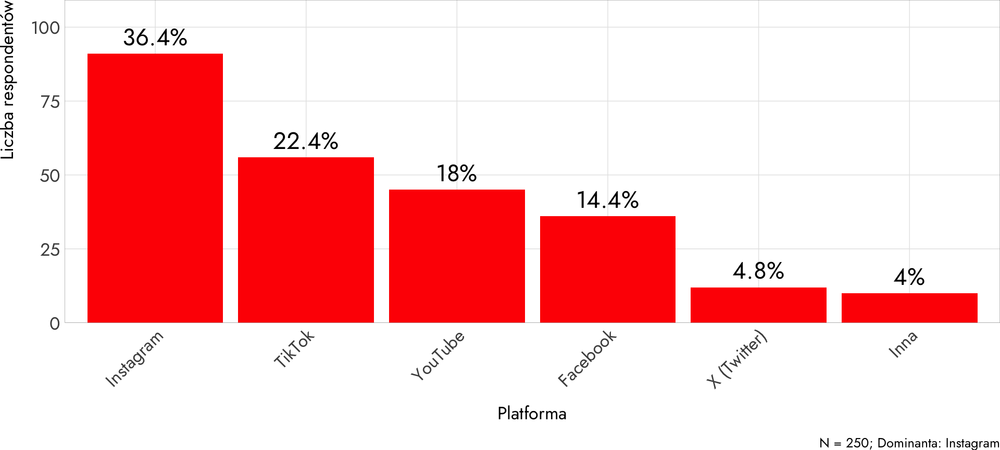Poziom porządkowy
Charakterystyka:
- Istnieje logiczny porządek między kategoriami (np. oceny szkolne, ranking ulubionych potraw, “zgadzam się / nie zgadzam się”)
- Możemy powiedzieć, że coś jest “więcej” lub “mniej”
- NIE wiemy, jak duże są różnice między kategoriami
Dozwolone operacje:
- Wszystko co dla nominalnego PLUS:
- Mediana, kwartyle, percentyle
- Średnia jest dyskusyjna (niektórzy akceptują, inni nie)
Przykład analizy zmiennej porządkowej
Pytanie: “W jakim stopniu zgadzasz się z twierdzeniem: Media społecznościowe pozytywnie wpływają na moje samopoczucie psychiczne?”
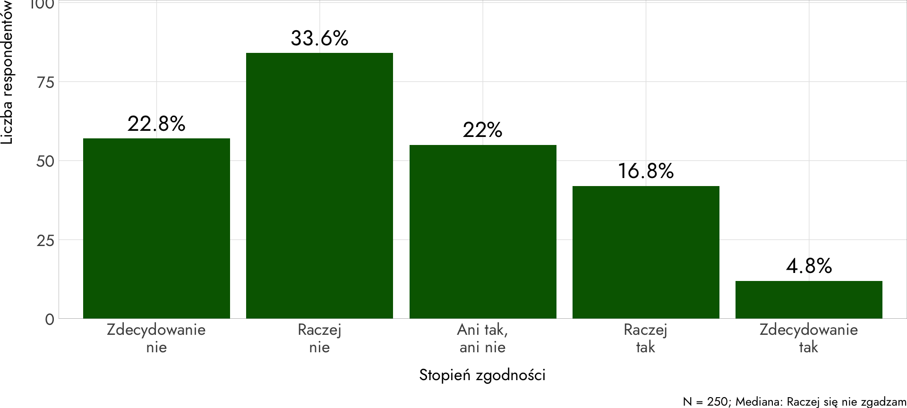Poziom przedziałowy
Charakterystyka:
- Ma porządek i równe odległości między wartościami (np. rok urodzenia, temperatura)
- Brak „prawdziwego zera” – zero jest umowne
- Różnice są mierzalne i porównywalne
Dozwolone operacje:
- Wszystko co dla porządkowego PLUS:
- Średnia arytmetyczna
- Odchylenie standardowe
- NIE można: dzielić jednej wartości przez drugą (proporcje)
Przykład analizy zmiennej przedziałowej
Pytanie: “Ile godzin dziennie spędzasz w mediach społecznościowych?”
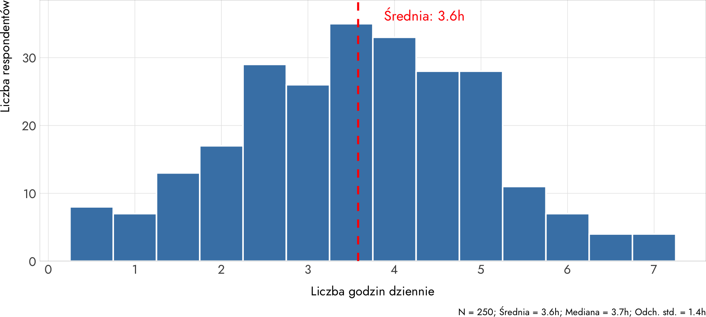Poziom ilorazowy (stosunkowy)
Charakterystyka:
- Szczególny przypadek poziomu przedziałowego (np. wiek, dochód, waga)
- Posiada prawdziwe zero (oznacza brak cechy)
- Można sensownie tworzyć proporcje i stosunki
Dozwolone operacje:
- Wszystkie operacje matematyczne
- Proporcje i stosunki (np. “dwa razy więcej”)
Przykład analizy zmiennej ilorazowej
Pytanie: “Ile masz obserwujących (followers) na platformie, z której korzystasz najczęściej?”
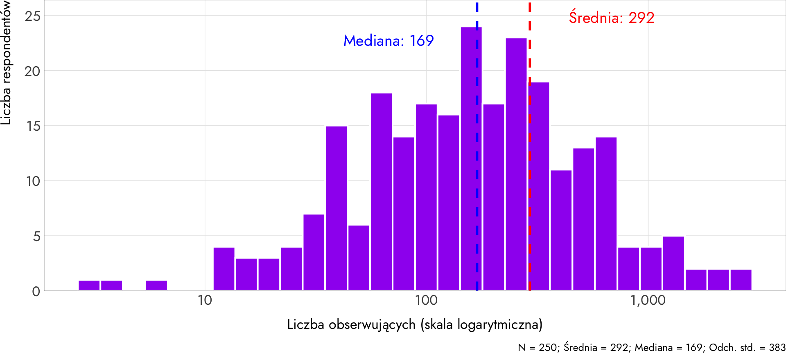Podsumowanie poziomów pomiaru
| Poziom | Kategorie | Porządek | Równe odstępy | Prawdziwe zero |
|---|---|---|---|---|
| Nominalny | ✓ | ✗ | ✗ | ✗ |
| Porządkowy | ✓ | ✓ | ✗ | ✗ |
| Przedziałowy | ✓ | ✓ | ✓ | ✗ |
| Ilorazowy | ✓ | ✓ | ✓ | ✓ |
Zasada: Im wyższy poziom pomiaru, tym więcej możliwości analitycznych.
Analiza danych ilościowych
Przygotowanie bazy danych
Przed rozpoczęciem analizy należy:
- Sprawdzić kompletność danych
- Zidentyfikować braki danych (missing values)
- Zdecydować, jak traktować braki
- Zweryfikować poprawność kodowania
- Sprawdzić, czy wartości mieszczą się w dozwolonych zakresach
- Zidentyfikować wartości odstające
- Utworzyć nowe zmienne (jeśli potrzebne)
- Przekodowanie zmiennych
- Tworzenie indeksów i skal
Sprawdzenie kompletności danych
Problem: Braki danych (missing values) - respondenci nie odpowiedzieli na wszystkie pytania
Wizualizacja braków danych
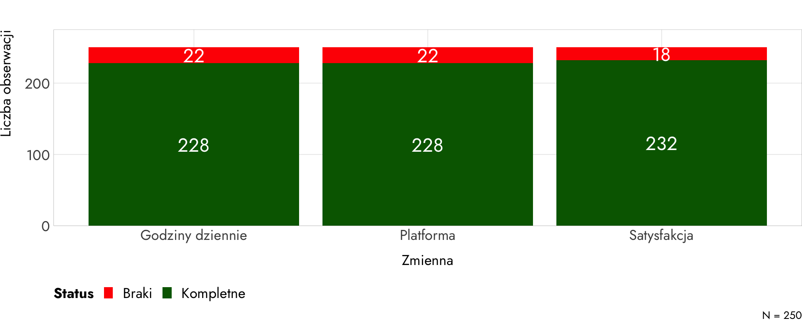Decyzja: Czy usunąć przypadki z brakami, czy je imputować (uzupełnić)?
Weryfikacja poprawności kodowania
Problem: Wartości poza dozwolonym zakresem lub odstające
Sprawdzenie wieku:Min: -5 Max: 999 Wartości poza zakresem 18-30: 5 Sprawdzenie godzin dziennie:Min: -2 Max: 30 Wartości niemożliwe (<0 lub >24): 4Wizualizacja wartości odstających
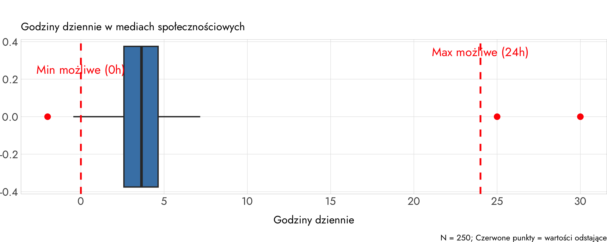Decyzja: Usunąć błędne wartości lub zamienić na NA?
Tworzenie nowych zmiennych
Problem: Potrzeba kategoryzacji lub łączenia zmiennych
Przykładowe dane przed i po kategoryzacji: godziny_dziennie intensywnosc
1 4.972954 Wysoka (4-6h)
2 4.203073 Wysoka (4-6h)
3 3.338043 Umiarkowana (2-4h)
4 3.180683 Umiarkowana (2-4h)
5 5.237148 Wysoka (4-6h)
6 5.438532 Wysoka (4-6h)
7 4.301971 Wysoka (4-6h)
8 3.309448 Umiarkowana (2-4h)
9 1.662687 Niska (<2h)
10 1.817973 Niska (<2h)Wizualizacja nowej zmiennej

Zastosowanie: Łatwiejsza analiza i interpretacja wyników
Analiza jednozmiennowa – opis próby
Cel: Opisać rozkład każdej zmiennej osobno
Elementy analizy:
- Rozkład wartości
- Częstości (liczby bezwzględne i procenty)
- Ważne odpowiedzi vs braki odpowiedzi
- Miary tendencji centralnej
- Dominanta (modalna) – wartość najczęstsza
- Mediana – wartość środkowa
- Średnia arytmetyczna
- Miary rozproszenia
- Zakres (rozstęp) wartości
- Odchylenie standardowe
Rozkład wartości: Częstości
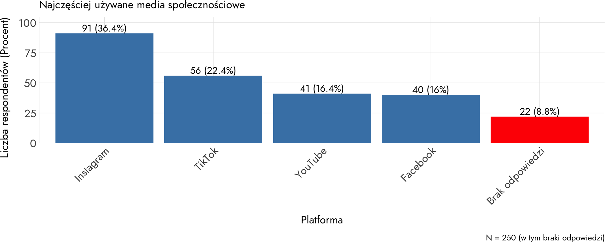Interpretacja: Instagram dominuje (36.4%), wysokie braki odpowiedzi (8.8%)
Miary tendencji centralnej
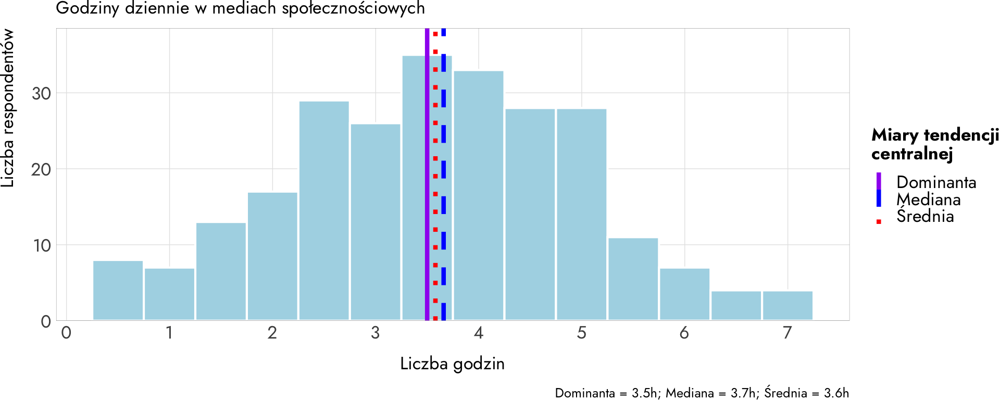Interpretacja: Wszystkie trzy miary są podobne (~3.5h), co wskazuje na symetryczny rozkład
Miary rozproszenia
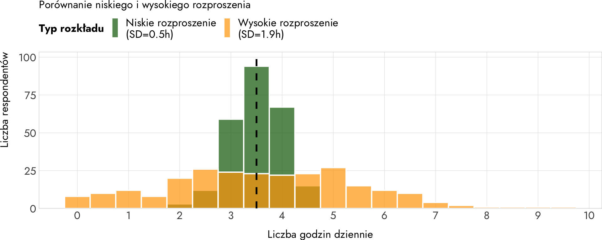Interpretacja: Wyższe SD = większe zróżnicowanie w czasie korzystania
Dobór miar do typu zmiennej
| Poziom pomiaru | Tendencja centralna | Rozproszenie |
|---|---|---|
| Nominalny | Dominanta | - |
| Porządkowy | Dominanta, Mediana | Rozstęp kwartylowy |
| Przedziałowy | Średnia, Mediana | Odch. standardowe |
| Ilorazowy | Średnia, Mediana | Odch. standardowe |
Uwaga: Zawsze można użyć miar z niższych poziomów, ale nie z wyższych.
Przykład analizy jednozmiennowej
Pytanie: “Jak oceniasz ogólny wpływ mediów społecznościowych na Twoje życie?”
| Odpowiedź | % |
|---|---|
| Bardzo pozytywny | 8% |
| Raczej pozytywny | 27% |
| Ani pozytywny, ani negatywny | 35% |
| Raczej negatywny | 22% |
| Bardzo negatywny | 8% |
Źródło: Dane przykładowe, 2025
Test istotności różnic między kategoriami
Pytanie badawcze: Czy rozkład odpowiedzi różni się istotnie od rozkładu równomiernego?
TEST CHI-KWADRAT DOPASOWANIA================================Hipoteza zerowa (H0): Wszystkie kategorie są równie prawdopodobne (20% każda)Hipoteza alternatywna (H1): Rozkład różni się od równomiernegoObserwowane częstości: Bardzo pozytywny: 20 (8.0%)
Raczej pozytywny: 68 (27.1%)
Neutralny: 88 (35.1%)
Raczej negatywny: 55 (21.9%)
Bardzo negatywny: 20 (8.0%)
Oczekiwane częstości (przy H0): Bardzo pozytywny: 50.2 (20.0%)
Raczej pozytywny: 50.2 (20.0%)
Neutralny: 50.2 (20.0%)
Raczej negatywny: 50.2 (20.0%)
Bardzo negatywny: 50.2 (20.0%)
Wyniki testu:χ² = 71.57 df = 4 p-value = 0 WNIOSEK: Odrzucamy H0 (p < 0.05)
Rozkład odpowiedzi różni się ISTOTNIE od równomiernego.
Respondenci nie odpowiadają losowo - widoczny wzorzec:
najwięcej osób wybiera odpowiedzi neutralne i raczej pozytywne.Wizualizacja testu dopasowania

Interpretacja: Rozkład odpowiedzi różni się istotnie od równomiernego (χ² = 71.57, p < 0.001). Respondenci najczęściej wybierają odpowiedzi neutralne (35%) i raczej pozytywne (27%), co sugeruje umiarkowanie pozytywne nastawienie do mediów społecznościowych z dużą dozą ambiwolencji.
Analiza dwuzmiennowa – wyjaśnienie
Cel: Zbadać związek między dwiema zmiennymi
Kiedy możemy mówić o wpływie?
- Gdy mamy porównanie między grupami
- I to nie zawsze – korelacja ≠ przyczynowość!
Narzędzia:
- Tabele krzyżowe (kontyngencji)
- Testy statystyczne (np. test chi-kwadrat)
- Miary korelacji
Przykład: Korelacja dodatnia
Związek między czasem w mediach społecznościowych a liczbą postów
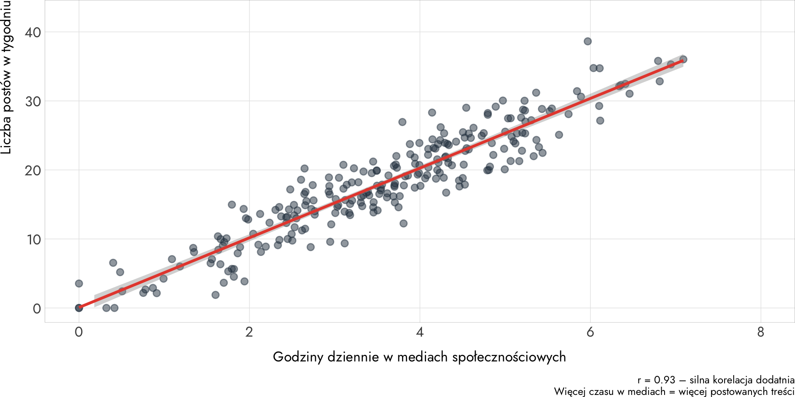Przykład: Korelacja ujemna
Związek między czasem w mediach społecznościowych a jakością snu
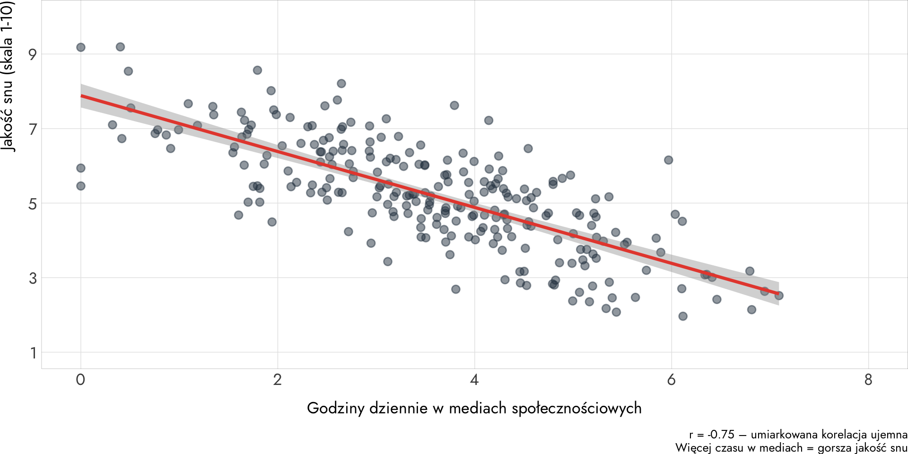Przykład: Brak korelacji
Związek między czasem w mediach społecznościowych a wiekiem
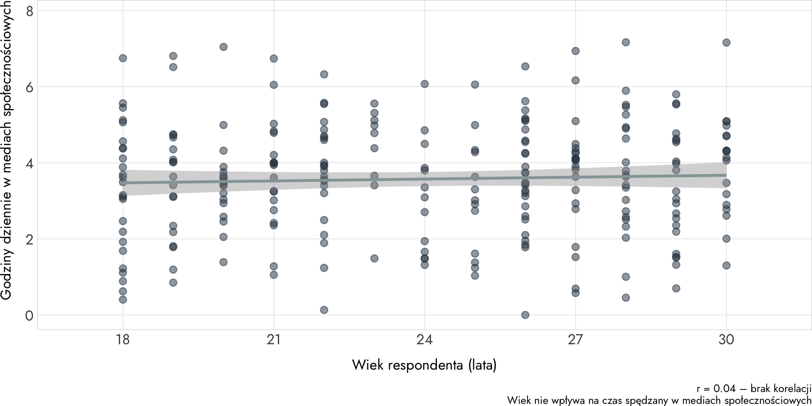Kroki tworzenia tabeli dwuzmiennowej
- Zdefiniuj zmienne
- Zmienna niezależna (np. płeć)
- Zmienna zależna (np. plany zawodowe)
- Podziel przypadki na grupy
- Zgodnie z wartościami zmiennej niezależnej
- Opisz każdą podgrupę
- W kategoriach wartości zmiennej zależnej
- Odczytaj porównanie
- Jakie są różnice między grupami?
Przykład analizy dwuzmiennowej
Pytanie: “Czy zgadzasz się z twierdzeniem: Media społecznościowe pozytywnie wpływają na moje życie społeczne?” (według płci)
Tabela krzyżowa (procenty wierszowe): odpowiedzi
plec Raczej nie Raczej tak Zdecydowanie nie Zdecydowanie tak
Kobiety 36.2 26.7 29.3 7.8
Mężczyźni 17.2 35.8 6.7 40.3
Liczebności bezwzględne: odpowiedzi
plec Raczej nie Raczej tak Zdecydowanie nie Zdecydowanie tak
Kobiety 42 31 34 9
Mężczyźni 23 48 9 54
Test chi-kwadrat:χ² = 54.88 df = 3 p-value = 0
Wynik: Różnice między płciami są statystycznie istotne (p < 0.05)Wizualizacja analizy dwuzmiennowej
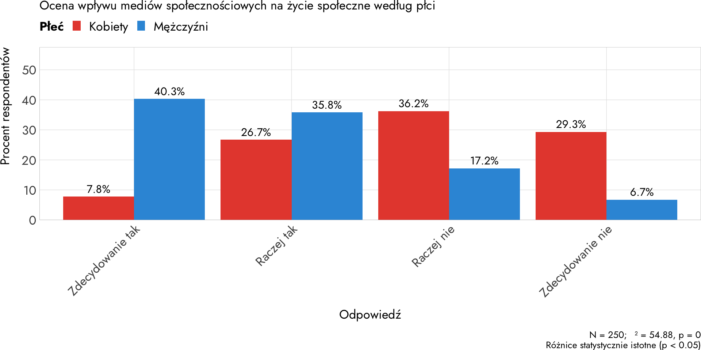Interpretacja: Mężczyźni znacznie częściej wyrażają pozytywne opinie o wpływie mediów społecznościowych na życie społeczne (około 80% odpowiedzi pozytywnych vs około 30% u kobiet). Kobiety wykazują silny sceptycyzm - około 70% odpowiedzi negatywnych. Test chi-kwadrat potwierdza, że różnice między płciami są statystycznie wysoce istotne (p < 0.001).
Analiza wielozmiennowa – wyjaśnienie
Cel: Zbadać złożone zależności między wieloma zmiennymi jednocześnie
Narzędzia:
- Tabele wielozmiennowe (z kontrolą trzeciej zmiennej)
- Modele regresji
- Regresja liniowa (zmienna zależna ciągła)
- Regresja logistyczna (zmienna zależna binarna)
Zastosowanie:
- Kontrolowanie wpływu zmiennych zakłócających
- Przewidywanie wartości jednej zmiennej na podstawie innych
Przykład analizy wielozmiennowej
Pytanie: “Jak oceniasz wpływ mediów społecznościowych na Twoje samopoczucie?” (według płci i roku)
Analiza uwzględnia trzy zmienne:
- Rok badania (2018-2025)
- Płeć (kobiety/mężczyźni)
- Ocena wpływu na samopoczucie (skala 1-10)
Wizualizacja analizy wielozmiennowej
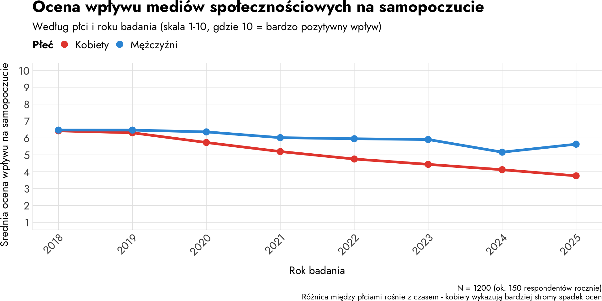Obserwacje:
- Oceny wpływu mediów społecznościowych spadły od 2018 roku u obu płci
- Różnica między płciami rośnie z czasem: w 2018 obie grupy miały podobne oceny (~6.5), w 2025 różnica wynosi około 2 punkty
- Kobiety wykazują bardziej stromy spadek ocen (efekt interakcji między rokiem a płcią)
- Możliwe interpretacje: rosnąca świadomość negatywnego wpływu mediów społecznościowych szczególnie wśród kobiet
Podsumowanie: typy analizy
| Typ analizy | Liczba zmiennych | Cel | Przykładowe narzędzia |
|---|---|---|---|
| Jednozmiennowa | 1 | Opis | Częstości, średnia |
| Dwuzmiennowa | 2 | Związek | Tabele krzyżowe, chi² |
| Wielozmiennowa | 3+ | Wyjaśnienie | Regresja |
Kluczowe zasady analizy ilościowej
- Dobierz metodę do poziomu pomiaru
- Pamiętaj o brakach danych
- Korelacja ≠ przyczynowość
- Interpretuj w kontekście
Dobierz metodę do poziomu pomiaru
Problem: Obliczanie średniej dla zmiennej nominalnej jest bez sensu
Błędne podejście
- Pytanie: “Z której platformy korzystasz najczęściej?”
- Kodowanie: Instagram=1, TikTok=2, Facebook=3, YouTube=4, X=5
- Obliczona “średnia”: 2.47
- Co to znaczy? Nic.
Poprawne podejście:
- Dominanta (najczęstsza wartość): Instagram
- Procenty: Instagram (35%), TikTok (25%), Facebook (15%), YouTube (15%), X (10%)
- To ma sens - pokazuje najpopularniejszą platformę
Zmienna nominalna → dominanta, częstości, procenty.
Pamiętaj o brakach danych
Problem: Braki danych mogą być systematyczne i wprowadzać błąd
- Scenariusz:
- Badanie: “Ile godzin dziennie spędzasz w mediach społecznościowych?”
- Osoby spędzające sporo czasu (>6h) częściej nie odpowiadają (wstyd, unikanie)
- 40% osób z wysokim użyciem nie odpowiada
- Tylko 5% osób z niskim użyciem nie odpowiada
- Konsekwencje:
- Prawdziwa średnia: 4.2 godziny
- Obserwowana średnia (z brakami): 3.5 godziny
- Zaniżenie o prawie godzinę
Zawsze sprawdzaj wzorzec braków - czy są losowe czy systematyczne?
Korelacja ≠ przyczynowość
Problem: Związek statystyczny nie oznacza związku przyczynowego
Pozorny związek:
- Obserwacja: Im więcej czasu w mediach społecznościowych, tym więcej znajomych (r = 0.75)
Błędna interpretacja:
- “Media społecznościowe POWODUJĄ więcej znajomości!”
Prawdziwa przyczyna - zmienna zakłócająca:
- Ekstrawersja wpływa zarówno na:
- Czas w mediach społecznościowych (ekstrawertyczni więcej korzystają)
- Liczbę znajomych (ekstrawertyczni mają więcej znajomych)
- Ekstrawersja wpływa zarówno na:
Korelacja może być efektem trzeciej zmiennej.
Interpretuj w kontekście
Problem: Te same liczby mogą znaczyć co innego w różnych kontekstach
Przykład: 3 godziny dziennie w mediach społecznościowych
- Kontekst 1: Student
- Średnia dla studentów: 5 godzin dziennie
- 3 godziny = poniżej średniej
- Interpretacja: Umiarkowane użycie
- Kontekst 2: Pracujący full-time
- Średnia dla pracujących: 2 godziny dziennie
- 3 godziny = powyżej średniej
- Interpretacja: Intensywne użycie
- Kontekst 1: Student
Liczby nabierają sensu tylko w kontekście teorii, norm grupowych i problemu badawczego.
Podsumowanie: Krok po kroku analiza ilościowa
Krok 1: Przygotowanie danych
Przed analizą:
- Import i weryfikacja danych
- Wczytaj dane do programu (SPSS, R, Excel)
- Sprawdź, czy wszystkie zmienne są poprawnie zakodowane
- Zweryfikuj typy zmiennych (nominalna, porządkowa, przedziałowa, ilorazowa)
- Czyszczenie danych
- Zidentyfikuj braki danych (missing values)
- Sprawdź wartości odstające i błędne
- Zdecyduj o strategii radzenia sobie z brakami
- Tworzenie nowych zmiennych (jeśli potrzebne)
- Przekodowanie (np. wiek → grupy wiekowe)
- Tworzenie skal i indeksów
- Odwracanie skal (jeśli potrzebne)
Krok 2: Analiza jednozmiennowa (opisowa)
Cel: Poznaj rozkład każdej zmiennej osobno
Dla każdej zmiennej:
- Oblicz podstawowe statystyki (dostosowane do poziomu pomiaru)
- Stwórz wizualizację (wykres słupkowy, histogram)
- Opisz rozkład (jaka jest typowa wartość? jak bardzo zróżnicowana?)
Typowe pytania:
- Jaka jest średnia/mediana/dominanta?
- Jak bardzo zróżnicowane są odpowiedzi?
- Ile jest braków danych?
- Czy rozkład jest symetryczny czy skośny?
Krok 3: Analiza dwuzmiennowa (relacyjna)
Cel: Zbadaj związki między parami zmiennych
Proces:
Wybierz parę zmiennych do analizy
- Zmienna niezależna (ta, która może wpływać)
- Zmienna zależna (ta, na którą wpływa)
Dobierz metodę (zależy od typów zmiennych - patrz następne slajdy)
Wykonaj analizę i test statystyczny
Zinterpretuj wyniki
- Czy jest związek?
- Jak silny jest związek?
- Czy jest statystycznie istotny?
Krok 4: Analiza wielozmiennowa (zaawansowana)
Cel: Kontroluj wpływ zmiennych zakłócających, buduj modele predykcyjne
Podejścia:
- Tabele wielopolowe
- Analiza związku między dwiema zmiennymi z kontrolą trzeciej
- Sprawdź, czy związek jest pozorny czy rzeczywisty
- Modele regresji
- Przewiduj wartość zmiennej zależnej na podstawie wielu predyktorów
- Kontroluj jednocześnie wpływ wielu zmiennych
To już bardziej zaawansowane - wykracza poza ten kurs
Krok 5: Raportowanie wyników
Co zawrzeć w raporcie?
- Opis próby
- Liczebność, struktura demograficzna
- Braki danych
- Wyniki analiz
- Tabele i wykresy
- Statystyki opisowe
- Testy statystyczne (jeśli stosowane)
- Interpretacja
- Co wyniki oznaczają w kontekście pytania badawczego?
- Jakie są ograniczenia?
Dobór metody analizy do typu zmiennych
Przegląd: Jaką metodę wybrać?
Kluczowe pytanie: Jakiego typu są moje zmienne?
Metoda analizy zależy od poziomu pomiaru zmiennych:
- Zmienna niezależna (ta, która wpływa)
- Zmienna zależna (ta, na którą wpływa)
Podstawowe zasady:
- Dla zmiennych nominalnych → częstości, tabele krzyżowe
- Dla zmiennych porządkowych → mediany, testy nieparametryczne
- Dla zmiennych przedziałowych/ilorazowych → średnie, korelacje, regresje
Schemat decyzyjny: Jedna zmienna
Analiza jednozmiennowa (opisowa)
| Typ zmiennej | Miary tendencji centralnej | Miary rozproszenia | Wizualizacja |
|---|---|---|---|
| Nominalna | Dominanta Częstości |
Liczba kategorii | Wykres słupkowy Wykres kołowy |
| Porządkowa | Dominanta Mediana (Średnia - dyskusyjne) |
Rozstęp Rozstęp kwartylowy |
Wykres słupkowy |
| Przedziałowa / Ilorazowa | Średnia Mediana Dominanta |
Odchylenie standardowe Wariancja Zakres |
Histogram Boxplot |
Przykłady:
- Nominalna: Płeć → “60% kobiet, 40% mężczyzn”
- Porządkowa: Wykształcenie → “Mediana: średnie wykształcenie”
- Przedziałowa: Wiek → “Średnia: 24.3 lat, SD = 3.2”
Schemat decyzyjny: Dwie zmienne
Analiza dwuzmiennowa - zależności między zmiennymi
| Zmienna niezależna | Zmienna zależna | Metoda analizy | Test statystyczny | Wizualizacja |
|---|---|---|---|---|
| Nominalna | Nominalna | Tabela krzyżowa Procenty |
Chi-kwadrat (χ²) | Wykres słupkowy grupowany |
| Nominalna | Porządkowa | Porównanie median | Test U Manna-Whitneya Test Kruskala-Wallisa |
Boxplot dla grup |
| Nominalna | Przedziałowa/Ilorazowa | Porównanie średnich | Test t-Studenta ANOVA |
Wykres słupkowy średnich Boxplot |
| Porządkowa | Porządkowa | Korelacja rang | Korelacja Spearmana (ρ) | Wykres punktowy |
| Porządkowa | Przedziałowa/Ilorazowa | Korelacja | Korelacja Spearmana | Wykres punktowy |
| Przedziałowa/Ilorazowa | Przedziałowa/Ilorazowa | Korelacja liniowa | Korelacja Pearsona (r) Regresja liniowa |
Wykres punktowy z linią trendu |
Przykład 1: Nominalna × Nominalna
Pytanie badawcze: Czy płeć wpływa na wybór platformy społecznościowej?
Zmienne:
- Niezależna: Płeć (nominalna: Kobieta, Mężczyzna)
- Zależna: Platforma (nominalna: Instagram, TikTok, Facebook, YouTube)
Metoda:
- Tabela krzyżowa z procentami wierszowymi
- Test chi-kwadrat (χ²) - czy różnice są statystycznie istotne?
Wizualizacja:
- Wykres słupkowy grupowany
- Każda platforma = osobny słupek, podzielony według płci
Interpretacja:
- “Kobiety częściej wybierają Instagram (45%) niż mężczyźni (25%)”
- “Różnice są statystycznie istotne (χ² = 23.4, p < 0.001)”
Przykład 2: Nominalna × Przedziałowa
Pytanie badawcze: Czy płeć wpływa na czas spędzany w mediach społecznościowych?
Zmienne:
- Niezależna: Płeć (nominalna: Kobieta, Mężczyzna)
- Zależna: Godziny dziennie (ilorazowa: 0-24)
Metoda:
- Porównanie średnich dla grup
- Test t-Studenta - czy różnica między średnimi jest istotna?
Wizualizacja:
- Wykres słupkowy średnich z błędami standardowymi
- Boxplot dla każdej grupy
Interpretacja:
- “Kobiety spędzają średnio 4.2h dziennie (SD=1.8), mężczyźni 3.1h (SD=1.5)”
- “Różnica jest statystycznie istotna (t = 4.32, p < 0.001)”
Przykład 3: Przedziałowa × Przedziałowa
Pytanie badawcze: Czy czas w mediach społecznościowych wpływa na jakość snu?
Zmienne:
- Niezależna: Godziny dziennie (ilorazowa: 0-24)
- Zależna: Jakość snu (przedziałowa: skala 1-10)
Metoda:
- Korelacja Pearsona (r) - siła i kierunek związku
- Regresja liniowa (jeśli chcemy przewidywać)
Wizualizacja:
- Wykres punktowy (scatter plot) z linią trendu
Interpretacja:
- “r = -0.52 - umiarkowana korelacja ujemna”
- “Więcej czasu w mediach wiąże się z gorszą jakością snu”
- “10% wariancji jakości snu wyjaśniane czasem w mediach (R² = 0.10)”
Przykład 4: Nominalna × Porządkowa
Pytanie badawcze: Czy wykształcenie różni się według płci?
Zmienne:
- Niezależna: Płeć (nominalna: Kobieta, Mężczyzna)
- Zależna: Wykształcenie (porządkowa: podstawowe < średnie < wyższe)
Metoda:
- Porównanie median (nie średnich!)
- Test U Manna-Whitneya - dla 2 grup
- Test Kruskala-Wallisa - dla 3+ grup
Wizualizacja:
- Wykres słupkowy z rozkładem procentowym dla każdej kategorii
- Tabela krzyżowa z procentami
Interpretacja:
- “Mediana dla kobiet: wykształcenie wyższe”
- “Mediana dla mężczyzn: wykształcenie średnie”
- “Różnica statystycznie istotna (U = 1245, p = 0.003)”
Przykład 5: Porządkowa × Porządkowa
Pytanie badawcze: Czy wykształcenie wiąże się z poziomem satysfakcji z życia?
Zmienne:
- Niezależna: Wykształcenie (porządkowa: podstawowe < średnie < wyższe)
- Zależna: Satysfakcja (porządkowa: skala Likerta 1-5)
Metoda:
- Korelacja rang Spearmana (ρ)
Wizualizacja:
- Wykres punktowy
- Lepiej: tabela krzyżowa z procentami
Interpretacja:
- “ρ = 0.34 - słaba do umiarkowanej korelacja dodatnia”
- “Wyższe wykształcenie wiąże się z wyższą satysfakcją życia”
- “Związek statystycznie istotny (p < 0.001)”